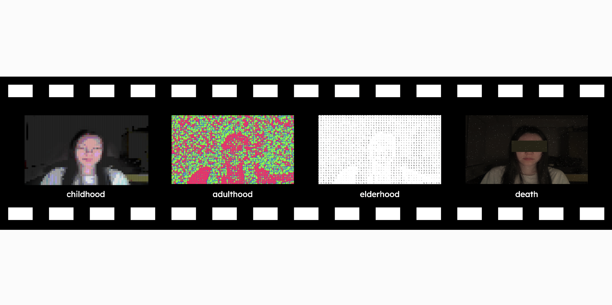

Projects
X
Advanced CC
X



Experimental Camera - Four Cuts of Life


Experimental Camera Prototypes.txt
X
Orignally, for this project, I wanted to create a photo-booth style camera that will allow you to decorate four photos that you take. However, after more brainstorming, I decided to create a camera that would express a certain concept: the different stages of life. I kept the photo-booth style of having four cameras shown vertically, and decided to have each camera represent a certain stage of life: childhood, early adulthood, elderhood, and death.
Currently, I have created two cameras for childhood and adulthood. The childhood camera represents innocence, confusion, and lack of memory. The adulthood camera represents excitement and youth.
| Final Layout (Link) | Childhood (Link) | Adulthood (Link) |